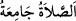

ashab: “__WORD__ es-Salâtü câmiah (Namaz toplayıcıdır/namaz için toplanın.)”[44]
diye namaza çağrıldı. Çünkü bilinen namaz için ezan ve ikâmet Medîne’de meşrû
olmuştur. Ashâb (r.anhüm) toplandılar. Hz. Peygamber (s.a.) onlara namaz kıldırdı. Bu
namaz öğle namazı “salâtü’z-zuhr” diye isimlendirildi. Çünkü sıcağın şiddetli olduğu
zaman ya da güneş yükseldiği vakit kılınmıştı. Rasûlullah (s.a.)’in insanlara namaz
kıldırması, Cebrâil (a.s.)’la kıldıktan sonra oldu. Cebrâil (a.s.), Hz. Peygamber (s.a.)’e
iki gün imam oldu. Birinci gün her vaktin başında, ikinci gün sonunda kıldırdı. Bu,
Allah’ın taşına (Hacer-i esved) müteveccih olarak Kâbe’nin kapısının yanında oldu.
Sonra Cebrâil (a.s.) dönüp şöyle dedi: “Ey Muhammed! Bu senin ve senden önceki
peygamberlerin vaktidir. Namaz vakitleri, işte bu iki vakit arasıdır.[45]
İsra gecesinden sonraki ilk namaz sabah namazı olduğu halde, burada kılınan ilk
namaz sabah namazı olmamıştır. Çünkü namazın kılınması, onun nasıl kılınacağının
beyan edilmesine bağlıdır. Vâcib olması da bununla ilgilidir. Sanki şöyle denilmiştir:
“Kendi vaktinde nasıl kılınacağı belli olduğu zaman namazı vâcib kıldım.” Sabah
namazının ise henüz nasıl kılınacağı belli olmadığı için kılınması vâcib olmamıştı.
“Cebrâil (a.s.)’ın: “Bu senin ve senden önceki peygamberlerin vaktidir.” sözü, bu
namazların önceki her bir peygamber için de meşrû olduğunu gösterir. Halbuki durum
böyle değildir. Çünkü beş vakit namaz bu ümmetin husûsiyetlerindendir.” diyecek
olursan biz de şöyle deriz: Bunun mânâsı şudur: Bu iki tarafı sınırlandırılan vakit, tıpkı
önceki peygamberlerin vakti gibidir. Çünkü vakit, iki tarafı sınırlı olan şeydir. Ya da
peygamberlerden bazısı sabah namazını, bazısı da sonraki namazları kılmışlardır. Bu
ise tamamının bu şekil üzere bu ümmetin husûsiyetlerinden olmasına mânî teşkil etmez.
Rivâyete göre sabah namazını ilk defa cennetten yeryüzüne indirildiği zaman Âdem
(a.s.) kılmıştır. Dünyayı zulmet kaplamış ve geceyi karanlık bürümüştü. Daha önce
böyle bir şey görmediği için çok korktu. Tan yeri ağarınca karanlıktan kurtulduğu ve
gündüze tekrar kavuştuğu için Allah’a şükür olsun diye iki rekat namaz kıldı. Ya da
tevbesinin kabûlü fecr zamanına rastladı. Tevbesi kabûl edildiği, muhâlefeti sona
erdiği, tevfîk nûru doğduğu ve muhâlefet zulmeti battığı için Allah Teâlâ’ya şükür olmak
üzere iki rekat namaz kıldı.
Güneşin zevâlinden sonra; öğle vaktinde ilk defa namaz kılan İbrâhim (a.s.)’dır. Öğle
vaktinde oğlu İsmâil (a.s.)’ın yerine koçu kurban edince dört rekat namaz kıldı. Bu, oğul
üzüntüsünün gitmesine, gökten kurban inmesine, “rüyayı gerçekleştirdin” (es-Sâffât,
37/105) diye nida olunduğunda Allah’ın rızasına ermesine ve oğlunun boğazlanmasının
eziyet ve meşakkatine sabır göstermesine şükür mâhiyetindeydi.
İkindi namazını ilk defa Yunus (a.s.) kılmıştır. O bu namazı, Allah’ın kendisini dört
zulümâttan; yâni zillet, karanlık, su ve balığın karnından kurtarınca kılmıştı.
Akşam namazını ilk defa kılan Îsâ (a.s.)’dır. Birinci rekat ulûhiyyeti nefsinden,
ikincisi annesinden kaldırmak, üçüncüsü ise ulûhiyyetin sadece Allah’a âid olduğunu